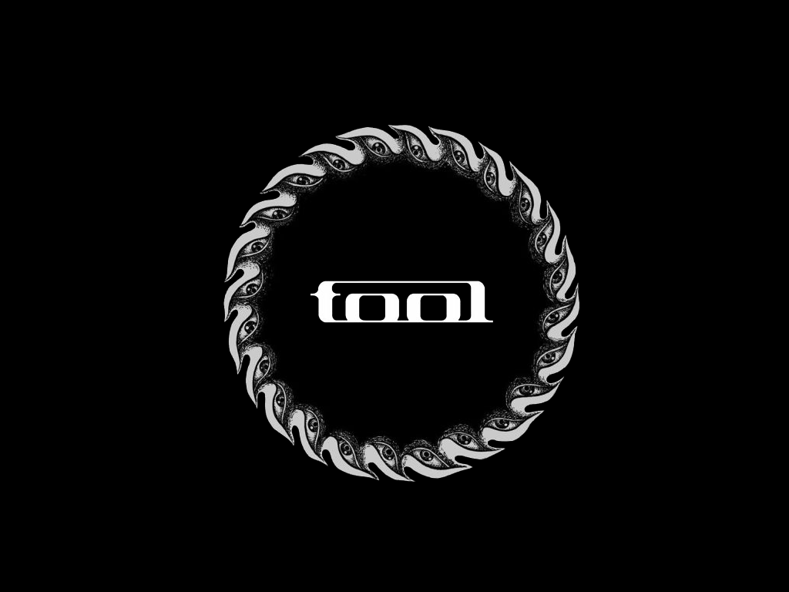

<!DOCTYPE html>
<html lang="en">

<head>
    <meta charset="UTF-8">
    <meta name="viewport" content="width=device-width, initial-scale=1.0">
    <link rel="stylesheet" href="style.css">
    <link href="https://fonts.googleapis.com/css?family=PT+Sans&display=swap" rel="stylesheet">
    <script src="https://cdn.jsdelivr.net/npm/handlebars@latest/dist/handlebars.js"></script>
    <script src="index.js" defer></script>
    <script id="band-template" type="text/x-handlebars-template">
        <a href="https://www.youtube.com/watch?v=MM62wjLrgmA" target="_blank"></a>
        <h1>{{band}} Fan Page</h1>
        <p>{{band}} is a {{genre}} band from {{city}} formed in the year {{year}}.</p>
    </script>
    <script id="members-template" type="text/x-handlebars-template">
        <p class="bold">Band Members</p>
        <p>{{vocals}}: vocals </p>
        <p>{{guitar}}: guitar </p>
        <p>{{bass}}: bass </p>
        <p>{{drums}}: drums </p>
    </script>
    <script id="albums-template" type="text/x-handlebars-template">
        <p class="bold">Discography </p>
        <p>{{first}} - (1993)</p>
        <p>{{second}} - (1996)</p>
        <p>{{third}} - (2001)</p>
        <p>{{fourth}} - (2006)</p>
        <p>{{fifth}} - (2019)</p>
    </script>
    <script id="artwork-template" type="text/x-handlebars-template">
        <p class="bold centered">Visuals</p>
        <p>{{guitar}} is responsible for most of the band's artwork concepts. Their album Undertow features a ribcage sculpture by {{guitar}} on its cover and photos contributed by the band members. Later albums included artwork by collaborating artists: Ænima and Salival featured works by Cam de Leon; Lateralus and 10,000 Days were created with the help of Alex Grey. The releases garnered positive critical reception, with a music journalist of the Associated Press attributing to the band a reputation for innovative album packaging.

        Both Ænima and 10,000 Days were nominated for the Grammy Award for Best Recording Package, but while the former failed to win in 1997, the latter did win in 2007. {{guitar}} created packaging for 10,000 Days that features a pair of stereoscopic lenses for viewing 3-D artwork and photos. {{guitar}}, a lifelong fan of stereoscopic photography, wanted the packaging to be unique and to reflect the 1970s artwork he appreciates. The CD packaging for Fear Inoculum included a rechargeable 4 inch HD video screen and a speaker which played a hidden track along with a video when opened and also included a 36-page booklet.</p>
    </script>
    <title>Favorite Band</title>
</head>

<body>

    <div class="content-placeholder"></div>
    <div class="line"></div>
    <div class="info-container">
        <div class="members-placeholder"></div>
        <div class="albums-placeholder"></div>
    </div>
    <div class="line"></div>
    <div class="visuals-placeholder"></div>

</body>

</html>